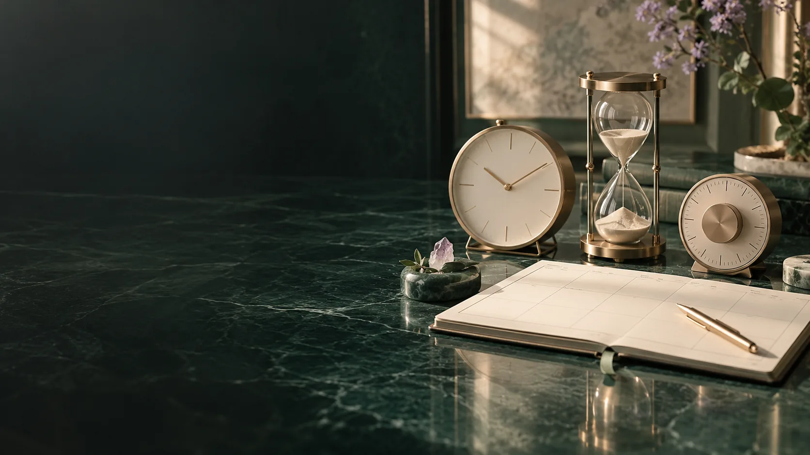

CALENDAR / PLANNED AND ACTUAL TIME
Keep the three clocks clear.
The source design calls for 120 qualifying hours at the defined operating pressure. Arrival, preparation, pressurisation, decompression, learning and everyday life have separate time.
A design requirement, not a treatment prescription.
Sixty two-hour qualifying intervals describe the programme in the supplied documents. The participant’s actual pressure, gas delivery, exposure sequence, eligibility and monitoring belong to a separately authorised operating plan. This public example specifies none of those clinical parameters.
A calendar that explains its rules.
The proposed selection canvas supports drag-and-drop or voice requests with a visible preview. Casual, normal and fast pacing change prompt density and response time. Accessibility adjustments are part of the actual plan.
- Qualifying time · a timestamped pressure trace and interval definition.
- Slot consistency · chosen blocks fit the two-hour canvas.
- Prerequisites · baseline, permission, assets and reviews are present.
- Availability · participant, installation, support and external appointments align.
- Continuity · installed streams, faults and interruptions have records.
One example session canvas.
The protocol illustrates twenty-five minutes of family reflection, twenty of love-language exploration, twenty of guided rest, thirty-five of best-self reflection and twenty of private twin review. These blocks total 120 minutes. They illustrate experience design inside a separately validated session.
Actual time updates the route.
A category change, interruption or early exit changes the actual record. Remaining time is calculated from qualifying intervals, with reasons and rule versions preserved. A calendar forecast changes when the real programme changes.
Learning has its own evidence.
The teacher course records artefacts, evaluation and teaching. Everyday immersion records the participant’s selected activities. A voluntary contribution records its actual verified hour once, even when several reflections later refer to it.
A 120-minute canvas.
This shows activity durations only. The individual operating plan supplies pressure, gas and exposure parameters.
- 01Family & belonging25 min
- 02Love-language reflection20 min
- 03Guided rest20 min
- 04Best selves35 min
- 05Private review20 min
Protocol Edition 2 · p. 9 · an illustrative canvas, not a clinical schedule.